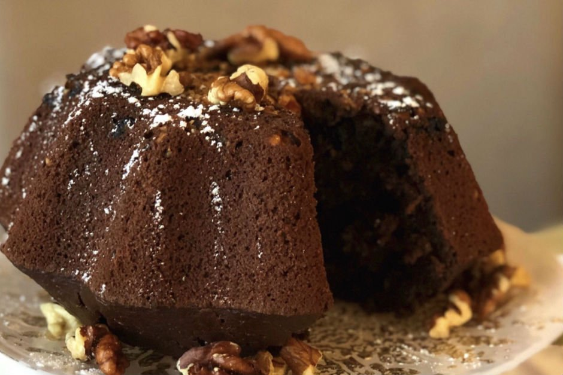

ÇAYLI KEK TARİFİ

Çay saatlerinize farklı bir lezzet ile renk katmaya ne dersiniz? Eğer düşünürseniz, çaylı kek tarifini mutlaka denemelisiniz. Ayrıca yapılışı da çok kolay. Sevdiklerinize özel bir şeyler sunmak isterseniz, çaylı kek tarifi hemen aşağıda. Şimdiden afiyet olsun...
| fırında |
4-6 kişilik |
30-40 dakika |
Yapımı için gerekli olan malzemeler
- 1 paket kabartma tozu
- 2 su bardağı un
- 3 adet yumurta
- 1,5 su bardağı toz şeker
- 1 çay bardağı sıvı yağ
- 1 su bardağı demlenmiş siyah çay
- 3 yemek kaşığı kakao
- 1 paket vanilya
Çaylı kek tarifi Nasıl yapılır?
- Şeker yumurtayı derin kasede çırpın.
- Daha sonra üzerine sıvı yağ, kakao ve demli ılık çayı ekleyip karıştırın. Hazırladığınız karışımdan bir su bardağı kenara ayırın..
- Kalan kek karışımına un, vanilya ve kabartma tozunu ilave edip güzelce karıştırın..
- Kek hamurunuzu yağlı kağıt serili tepsiye yayın. Ardından da önceden 180 derecede ısıtılmış fırına verin..
- Kekiniz piştikten sonra fırından çıkarın ve dilimleyin. Üzerine de önceden ayırdığınız çaylı karışımı gezdirin..
- Birkaç dakika dinlendirdikten sonra kekinizi servis edebilirsiniz.
- Afiyet olsun